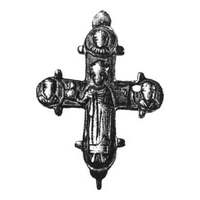
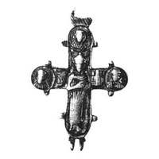

Catalog › CE-0910 · KOR2003-II.3.1.33
Encolpion întreg cu sfânt cu model de biserică și trei sfinți, relief înalt, detalii bine lucrate
sec. XII (1101–1200) · loc necunoscut · Muzeul Național de Istorie al Ucrainei, Kiev, inv. В-4625/688
double-sided reliquary cross (enkolpion), aramă; c. XII (1101–1200); find spot unknown; kept at Muzeul Național de Istorie al Ucrainei, Kiev.




Identificare
- Categorie
- Encolpion bivalv (relicvar)
- Material
- Aramă
- Tehnică
- Turnare în relief; Gravare (incizie)
- Stare
- Întreagă
- Dimensiuni
- Î 59 × L 51 mm
Iconografie
- Avers
- Neidentificat
- Descriere avers
- Pe față, în centru, sfânt cu model de biserică în mâna dreaptă și trei sfinți în medalioane; orificiu străpuns în medalionul drept. Contururile valvelor și medalioanelor subliniate cu o bordură joasă, netedă. Toate imaginile în relief înalt, cu detalii lucrate îngrijit, parțial șterse.
- Revers
- Neidentificat
- Descriere revers
- Pe revers, în centru, sfânt cu model de biserică în mâna stângă și trei sfinți în medalioane. Balama dreaptă de sus ruptă.
- Inscripții
- ГѲ (față, umărul stâng); БѲ (revers, umărul drept)
- Limba
- Slavonă
Datare și atribuire
- Datare
- sec. XII (1101–1200)
- Centru
- Necunoscut
- Tipologie
- Korzukhina–Peskova 2003, tip II 3 1
Descoperire
- Context
- Colecție (fără context)
Păstrare și referințe
- Colecție
- Muzeul Național de Istorie al Ucrainei, Kiev
- Nr. inventar
- В-4625/688
- Bibliografie
- G. F. Korzukhina, A. A. Peskova, Древнерусские энколпионы. Нагрудные кресты-реликварии XI–XIII вв., Sankt-Petersburg, 2003 [Korzukhina–Peskova 2003], p. 91, cat. nr. II 3 1/33, reprodusă la Табл. 43 (planșe, p. 285). Bibliografie citată în sursă: Леопардов 1891, табл. I, 1 а, б; Леопардов 1893, табл. I, 1, 2; Петров 1895, 24, № 274 или 275; Петров 1897, 252, № 356 или 357; [?] 1915, табл. XVII 5, 6.
- Figura
- Табл. 43
- Planșe
- Korzukhina–Peskova 2003, Табл. 43 (planșă fără paginație proprie în PDF; p. 285 tipărită)
- Observații
- Datare după Peskova: sec. XII. Proveniență în colecție: din colecția Voloșinski. Nota 24 a redacției: același encolpion a fost publicat ca provenind din Biserica Nașterii Domnului din Podol (Kiev), dar nu există încă temeiuri suficiente pentru identificare. Pentru ultima trimitere din tipar („1915 табл. XVII 5, 6”) autorul/anul precedent nu e clar în sursă. Inscripții adâncite. Literele Ѳ/Ө din inscripții transcrise după tipar; de verificat pe original. Coordonate: nu sunt date în sursă.
Citare: Corpus Encolpiorum, CE-0910, Encolpion întreg cu sfânt cu model de biserică și trei sfinți, relief înalt, detalii bine lucrate, --root/piese/KOR2003-II.3.1.33/ (accesat 2026-10-20).